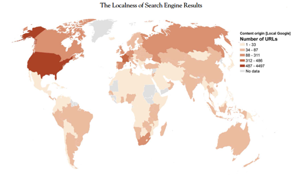

By Andrea Ballatore, Mark Graham and Shilad Sen
'The cities and towns that we live in were once constructed from
bricks, concrete, glass, and steel. Now, though, the places we inhabit
also consist of digital augmentations (Graham 2013): digital code and
digital content like data from Wikipedia, photographs from Flickr,
restaurant reviews from Yelp, and algorithms controlled by Google that
make information visible or invisible. The digital augmentations of
places, in other words, are beginning to matter as much as their
material counterparts…'
In the modern world, our first impressions of places is their
representations on the internet. In this modern world, however, there
still exists many communities that do not have the infrastructure to
support widespread internet access or large scale online contribution.
The major consequences of this are information incoming to these
communities being mostly non-local; and the digital representation of
these communities and locations being controlled by foreign
impressions of them. This creates a global disconnect between the
reality of a place and the digital representation of that place which
is largely created by foreign biases towards it. China, for example,
has its own local search engine and sphere of social media. The result
of this is the global image of china being largely built by US
sources. A study done at Cornell University analysed the effect of 267
907 China-related articles published by The New York Times on
population bias toward china and found that they explained 54% of the
negative skewed variance in the public towards China. [1]
'Although they portray themselves as neutral aggregators of
information, search engines have created an informational
infrastructure with precise characteristics, logics, and biases…The
personalization of results is another researched aspect of search
engines. Based on sophisticated and rich personal profiles, Google
Search produces different content for different users, increasing and
decreasing the visibility of links to deliver more relevant results.
This process, according to Pariser (2011), might result in a “filter
bubble,” in which users are systematically exposed only to content
that matches their political and cultural inclinations…'
Major Northern search engines such as Google, Yahoo and Bing all have
massive influence on a user's perception of the world. They are
particularly good at profiling users based on their tastes and
opinions and providing content that is largely skewed towards the
user's ideology. This creates a positive-feedback loop where users are
only exposed to media to enforce their existing beliefs. Search
engines are optimised to promote sensational content that invokes
strong emotional response to boost engagement. This often includes
extreme viewpoints that bolster a user's viewpoint or misinformation
intending to radicalise them against opposition. [2]

This figure shows the localness (the percentage of URLs on the search
engine front page when searching the location's name that originate
from said location) of each country's front page data. As seen in the
figure, most countries have below 88 local pages displaying on their
search engine front page. All countries with 88 or more URLs are
countries with well-established Internet infrastructure such as the
U.S., Canada, Russia and most of Europe. This illustrates how majority
of the information and representation of countries in the Southern
globe is controlled by Northern, more internet-adapted countries.
'This investigation of the geography of Google Search results shows
that wealthy and well-connected countries tend to have much more
locally produced content that is visible about them than poor and
poorly connected countries... This gives rise to a form of digital
hegemony, whereby producers in a few countries get to define what is
read by others. The United States, in particular, is a dominant
content-producing force...'
The digital divide between high-income communities with good internet
infrastructure and low-income communities that lack these facilities
continues to be a huge issue that is almost invisible globally. A
large reason for the problem's invisibility is the underrepresentation
of these disadvantaged places due to lack of locally produced content
on them.
The saying “When the U.S. sneezes, the world gets a cold,” aptly
describes the amount of influence America has globally. The world
adopts social norms and pop culture from the U.S. and is largely
influenced by their politics and economy. In addition to this, it is
clear from this study that the U.S. also controls our perception of
other countries with majority of content about said countries being
sourced from America. This control over the population's opinion of
foreign cultures is extremely dangerous as it alienates all standards
that deviate from those of the United States. Negative media
portrayals of immigrants has been shown to increase hostility and
prejudice towards foreigners in America [3]. This is likely to occur
at a larger scale, throughout the West so long as majority of
information about foreign countries is sourced from the U.S.
'The presence of a strong publishing industry, using SciMago
publication data as proxy, is the strongest predictor of the
production of visible online content. The importance of the h-index in
the model also shows that the impact of scientific publications is a
better predictor of localness than the mere number of
publications.'
The study finds that the issue is not simply a matter of access to
internet or local infrastructure. It finds that localness of online
content is better predicted by the amount of scholarly content
produced in the country. The problem then, is much deeper than one
that can be solved by simply posting more local content. Perhaps the
key to better online representation is the funding and bolstering of
local educational and scientific facilities. This is not to say that
there aren't steps to be taken by Google to minimise the bias created
by their algorithm.
'A few countries in the Global North play an inordinately large role
in defining the digital augmentations of the Global South. Google's
methods for ranking and representing are notoriously opaque…'
If google were to make the source of webpages and their reason for
ranking on the search page transparent to the public, it would largely
decrease the media bias these sources would create by giving the user
the awareness of how information they obtain may be skewed.
References
[1] J. Huang, G. Cook, and Y. Xie, “Large-scale quantitative
evidence of media impact on public opinion toward China,” arXiv.org,
https://arxiv.org/abs/2012.07575 (accessed Apr. 28, 2025).
[2] L. Leffer, “How search engines boost misinformation,”
Scientific American,
https://www.scientificamerican.com/article/how-search-engines-boost-misinformation/
(accessed Apr. 28, 2025).
[3] P. Conzo, G. Fuochi, L. Anfossi, F. Spaccatini, and C. O.
Mosso, “Negative media portrayals of immigrants increase ingroup
favoritism and hostile physiological and emotional reactions,”
Scientific reports,
https://pmc.ncbi.nlm.nih.gov/articles/PMC8361166/ (accessed Apr. 28,
2025).